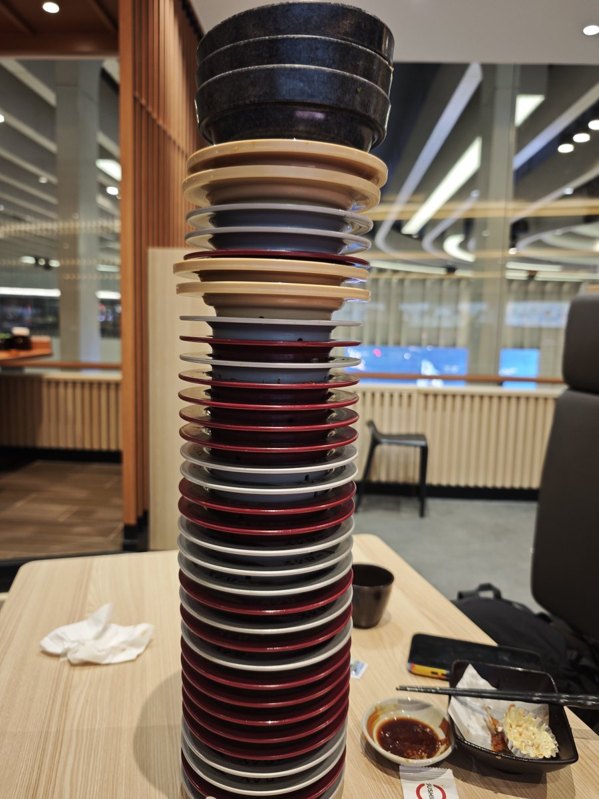
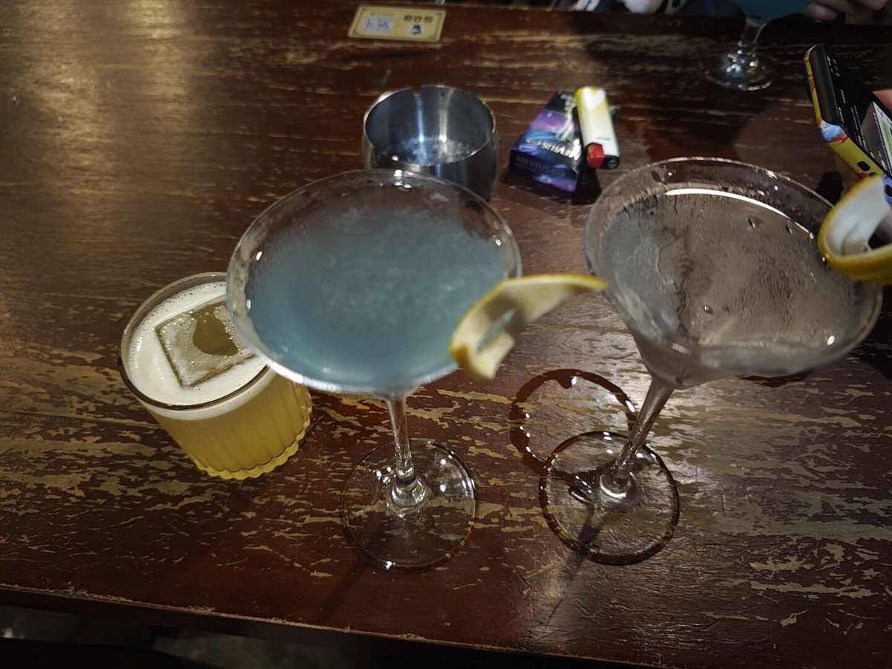
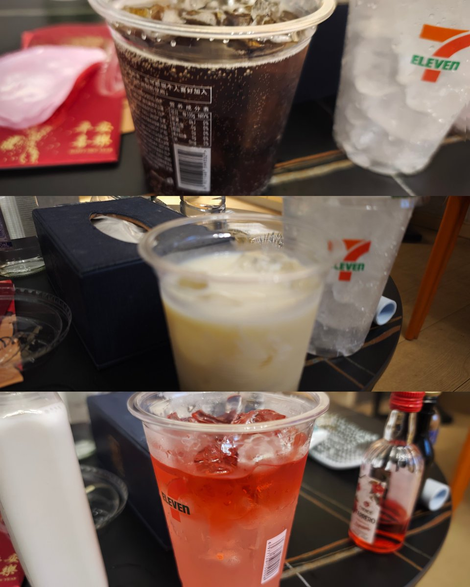

イレンナ
@Usam8964
@Sui_aini @SayoriCat8964 @A5Tr41 完全母亲来的，看哭了



穗_🌾
@Sui_aini
关于来青岛的前两日（8.28、8.29）repo、
我自从五月份烧炭没有死掉，我萌生出一个很需要精力和资金的想法，我想把我想要见的人都见一面，然后再去做决定（前几日发的推文）。
第一站：纱猫和春卷（ @SayoriCat8964 @A5Tr41 https://t.co/U8V4pVg5rn